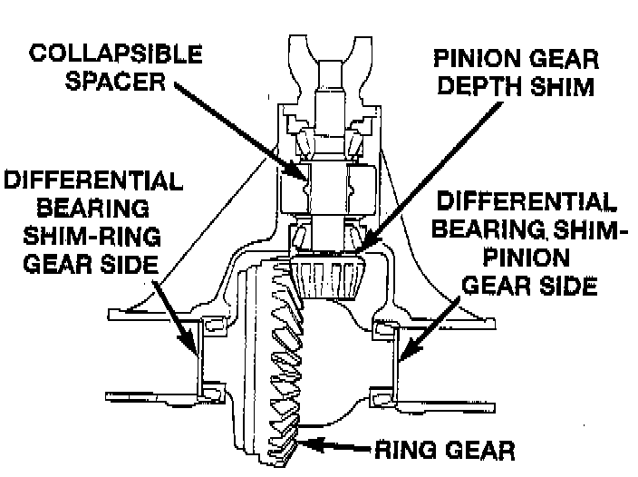

Differential Bearing Preload and Gear Backlash

Differential side bearing preload and gear backlash is achieved by selective shims inserted between the bearing cup and the axle housing. The proper shim thickness can be determined using slip-fit dummy bearings 6929-A, or equivalent in place of the differential side bearings and a dial indicator C-3339, or equivalent. Before proceeding with the differential bearing preload and gear backlash measurements, measure the pinion gear depth and prepare the pinion gear for installation. Establishing proper pinion gear depth is essential to establishing gear backlash and tooth contact patterns. After the overall shim thickness to take up differential side play is measured, the pinion gear is installed, and the gear backlash shim thickness is measured. The overall shim thickness is the total of the dial indicator reading, starting point shim thickness, and the preload specification added together. The gear backlash measurement determines the thickness of the shim used on the ring gear side of the differential case. Subtract the gear backlash shim thickness from the total overall shim thickness and select that amount for the pinion gear side of the differential.